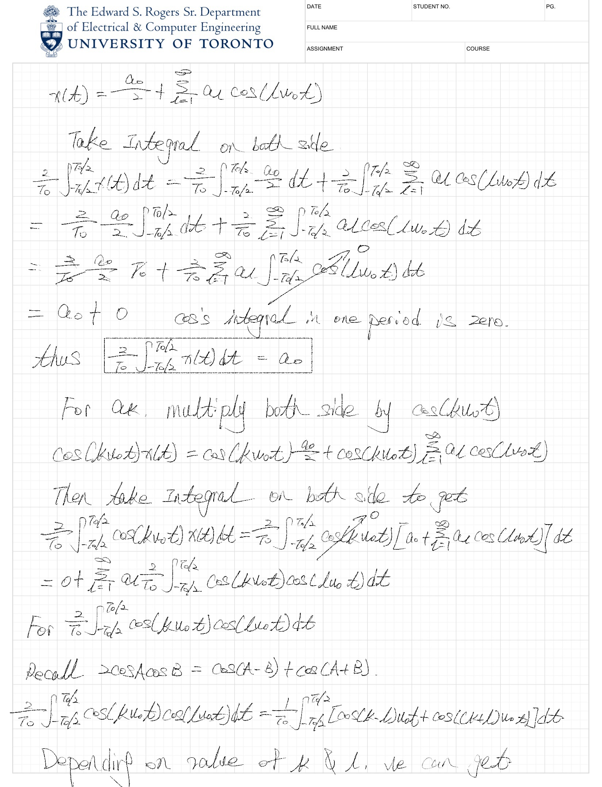
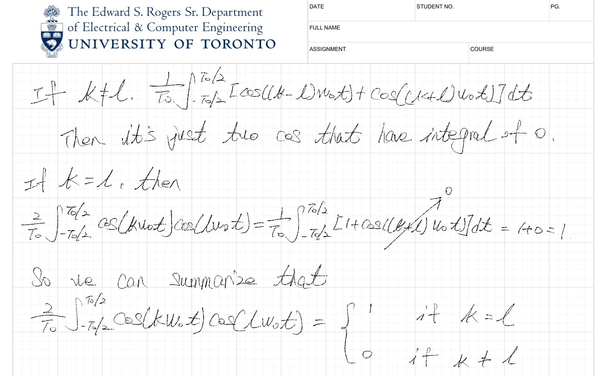
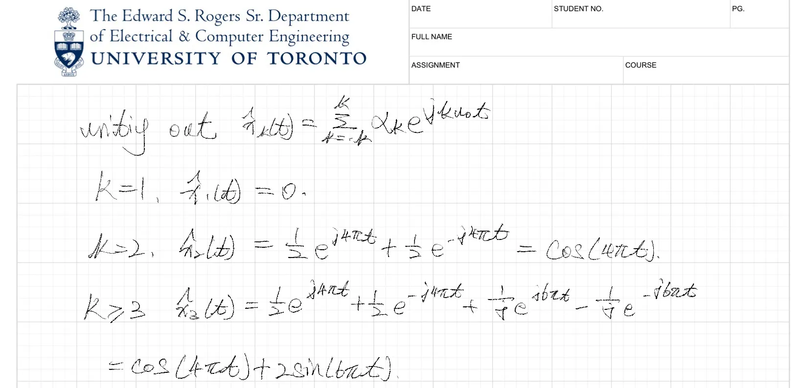

SS 2. FourierSeries
Last Edit: 1/19/26
Last Edit
Fourier Series #
Now consider this case

we have being given an oscillation signal of an object after collision
- This signal is kind of hard to be analysis, that it’s a Time Domain Signal with no features
- The way we do is try to build it based on Basis Signals and form a Weighted Sum
$$ \hat{x} = \alpha_0\phi_0 + \alpha_1\phi_1 + \alpha_2\phi_2 + \dots = \sum_{k} \alpha_k\phi_k $$
- And that is just the Principle of Fourier Analysis: The Transform between Time Domain and Frequency Domain
Introductory example: An Even Periodic Signal #

- This is an Even Signal, thus we can choose $\cos$ as the Fundamental Component
- Thus we have $\phi_0(t) = \frac{1}{2}$ as DC Component, $\phi_1(t) = \cos(\omega_0 t)$ as Fundamental Component, and $\phi_2(t) = \cos(2\omega_0 t), \phi_3(t) = \cos(3\omega_0 t), \dots$ as Harmonic Components
- So the whole set to build up this Periodic Signal will then be
$$ \left{ \frac{1}{2}, \cos(\omega_0 t), \cos(2\omega_0 t), \cos(3\omega_0 t), \dots \right} $$

Now we need to find a way to solve for the coefficient for the Linear Combination which is
$$ x(t) = \frac{a_0}{2} + \sum_{\ell=1}^{\infty} a_\ell \cos(\ell \omega_0 t) $$
-
Thus find those $a_0,a_1,a_2\dots$


-
The Final Result we achieved is that
$$ \frac{2}{T_0} \int_{-T_0/2}^{T_0/2} \cos(k\omega_0 t) \cos(\ell\omega_0 t) , dt = \begin{cases} 1 & \text{if } k = \ell \ 0 & \text{if } k \neq \ell \end{cases} $$
So now, for any Even Signal $x(t)$, we can apply the same method to extract cos signal at different frequency one by one
Ex. A Square Wave #
Having the Signal $x_{fin}(t)$, we wish to approach this signal by Fourier Series
$$ x_{\text{fin}}(t) = \begin{cases} 1 & \text{if } -\frac{\tau}{2} \le t \le \frac{\tau}{2} \ 0 & \text{otherwise} \end{cases} $$

Notice that this Signal have Duty Cycle less than 1 (Time when signal is 1 is shorter)
First we want to calculate $a_0$, that is
$$ a_0 = \frac{2}{T_0} \int_{-\frac{T_0}{2}}^{\frac{T_0}{2}} x(t) , \text{d}t = \frac{2}{T_0} \int_{-\tau/2}^{\tau/2} (1) , \text{d}t = \frac{2\tau}{T_0} $$
Secondly, find the general solution for $a_k$
$$ a_k = \frac{2}{T_0} \int_{-\frac{T_0}{2}}^{\frac{T_0}{2}} x(t) \cos(k\omega_0 t) dt = \frac{2}{T_0} \int_{-\tau/2}^{\tau/2} \cos(k\omega_0 t) dt $$
- The bond for integral is $-\tau/2$ to $\tau/2$ because the function $x(t)$ is 1 during this fragment, and other are just zero that doesn’t change the value of the Integral,
- While the value of function is simply 1, so it can be simplify to RHS
$$ = \frac{2}{T_0 k\omega_0} [\sin(k\omega_0 \tau/2) - \sin(-k\omega_0 \tau/2)] = \frac{2}{\pi k} \sin(k\omega_0 \tau/2) $$
- Thus eventually we can get the Fourier Series for this signal to be
$$ x(t) = \frac{\tau}{T_0} + \sum_{k=1}^{\infty} \frac{2 \sin(k\omega_0 \tau/2)}{\pi k} \cos(k\omega_0 t) $$
- And if we are doing an Approximation, that is only k terms of the Series, that will be
$$ \hat{x}K(t) = \frac{\tau}{T_0} + \sum{k=1}^{K} \frac{2 \sin(k\omega_0 \tau/2)}{\pi k} \cos(k\omega_0 t) $$

Frequency Domain #
After we extract the Square Wave from the Fourier Series, we can get its distribution over the frequency domain

- On the right side, it indicate the coefficient of Harmonic Signal along k
- Thus we can use ${a_k}_{k=0}^\infty$ as the equivalenty representing of $x(t)$ in the Frequency Domain
- While ${a_k}_{k=0}^\infty$ is being called the Spectrum of x
Fourier Series for odd Periodic Signals #
For odd signals, the Series can be represent by similar method, but just that we change sin to cos
$$ x(t) = \sum_{k=1}^{\infty} b_k \sin(k\omega_0 t),\quad b_k = \frac{2}{T_0} \int_{-T_0/2}^{T_0/2} x(t) \sin(k\omega_0 t) , dt $$
Fourier Series for Periodic Signals #
For Signals that are neither even or odd, but periodic we can use the combination of even and odd, that is
$$ x(t) = \frac{a_0}{2} + \sum_{k=1}^{\infty} a_k \cos(k\omega_0 t) + \sum_{k=1}^{\infty} b_k \sin(k\omega_0 t) $$
- However, solving those two integrals turns out to be hard, so we introduce the concept of Complex Exponential Signals
The Complex Exponential Fourier Series #
When dealing with Real Fourier Series, we normally need to solve several equations to get the Series, while in Complex Exponential, instead, we can use Euler’s Formula
$$ e^{jk\omega_0 t} = \cos(k\omega_0 t) + j\sin(k\omega_0 t) $$
- This formula change the problem from two Separate signal into one Complex Number on the Unit Circle in Complex Plane
$$ \hat{x}(t) = \sum_{k=-\infty}^{\infty} \alpha_k e^{\mathbf{j}k\omega_0 t}, \quad \alpha_k \in \mathbb{C} $$
- What this Formula States instead of $x(t) = \frac{a_0}{2} + \sum_{k=1}^{\infty} a_k \cos(k\omega_0 t) + \sum_{k=1}^{\infty} b_k \sin(k\omega_0 t)$, is that we no longer use sin and cos as block to build the Signal, instead, we use $\phi_k(t) = e^{jk\omega_0t}$
- However, changing into this more easier way, there are two challenges we need to face
- The fact that $e^{jk\omega_0 t} = \cos(k\omega_0 t) + j\sin(k\omega_0 t)$ has Imaginary Part, while in real life signal, we doesn’t have “Complex” Signal, thus we need to get rid of the Imaginary Part
- We need to produce both cos and sin, cause as indicated, a Periodic Signal need to be “building” on both cos and sin
- To get rid of the Imaginary Part, notice the fact that we are using the range of $\sum_{k=-\infty}^{\infty}$ to form the series, this means that for each $k> 0$, there will be one $k<0$ to pair with it
- Based on Euler’s Formula, the Positive k will produce
$$ (A+jB)(\cos \omega_0 t + j \sin \omega_0 t) = (A\cos - B\sin) + j(A\sin + B\cos) $$
- While the Negative k will produce
$$ (A-jB)(\cos \omega_0 t - j \sin \omega_0 t) = (A\cos - B\sin) - j(A\sin + B\cos) $$
- By adding those up, we will get
$$ 2(A\cos \omega_0 t - B\sin \omega_0 t) $$
Notice how this range $\sum_{k=-\infty}^{\infty}$ both get rid of Imaginary part and produce both cos and sin
Continuous-Time Fourier Series (CTFS) #
Let x be a periodic CT signal with fundamental period $T_0$ and angular frequency $\omega0 = 2π/T_0$, the complex numbers
$$ \alpha_k = \frac{1}{T_0} \int_{0}^{T_0} x(t)e^{-jk\omega_0t} dt $$
are called the Fourier Coefficients of x, and
$$ \hat{x}(t) = \sum_{k=-\infty}^{\infty} \alpha_k e^{jk\omega_0t} $$
is called the Continuous-Time Fourier Series (CTFS) of x
The integral can be taken in any interval of length $T_0$
Derivation of the coefficients via Approximation #
Assume we don’t know the formula of $\alpha_k = \frac{1}{T_0} \int_{0}^{T_0} x(t)e^{-jk\omega_0t} dt$ so far, we are trying to use approximation to prove that the above formula is the best approximation coefficient
- Consider a Finite number of terms of Fourier Series Expansion that
$$ \hat{x}K(t) = \sum{k=-K}^{K} \alpha_k e^{\mathbf{j}k\omega_0 t} $$
- We use MSE, Mean Square Error to evaluate the error which is
$$ J(\alpha_{-K}, \dots, \alpha_K) = \frac{1}{T_0} \int_{0}^{T_0} |x(t) - \sum \alpha_k e^{jk\omega_0t}|^2 dt $$
- By some derivation, we will found that
$$ \alpha_k = \frac{1}{T_0} \int_{0}^{T_0} x(t)e^{-jk\omega_0t} dt $$
- is exactly the CTFS coefficients we want for best possible approximation
See Appendix A for Derivation
Example: sum of harmonic signals #
Use CTFS to approximate signal
$$ x(t) = \cos(4\pi t) + 2 \sin(6\pi t) $$


Example: Square Wave #


Notice that it takes high frequencies to make sharp corners
The CTFS and Signal Manipulations #
Suppose having some CTFS Coefficients ${\alpha_k}_{k=-\infty}^{\infty}$, we can find the CTFS coefficients of simple manipulations, e.g. $3x(t) + 2$, $x(t - 5)$, $\text{Re}{x}$, $\frac{dx}{dt}(t)$ by properties of the CTFS
- For example, $x(t) = \sum_{k=-\infty}^{\infty} \alpha_k e^{j k \omega_0 t}$, then
$$ x(t - t_0) = \sum_{k=-\infty}^{\infty} \alpha_k e^{j k \omega_0 (t - t_0)}= \sum_{k=-\infty}^{\infty} (\alpha_k e^{-j k \omega_0 t_0}) e^{j k \omega_0 t} $$
- Which in result is just a mutiplication $\beta_k = \alpha_k e^{-j k \omega_0 t_0}$
- All Manipulations can be conclude in this table

Conjugate-Symmetry for real signals #
Known that all signals in real life are Real-Valued, that means
$$ x(t)=x(t)^* $$
Known this property, we can then conclude the Symmetry of Real-Valued Signal in Frequency Domain, recall the CTFS coefficients
$$ a_k = \frac{1}{T_0} \int_{0}^{T_0} x(t)e^{-\mathbf{j}k\omega_0 t} , dt $$
- It has the conjugate of
$$
a_k^* = \frac{1}{T_0} \int_{0}^{T_0} x(t)^* (e^{-\mathbf{j}k\omega_0 t})^* , dt= \frac{1}{T_0} \int_{0}^{T_0} x(t) e^{\mathbf{j}k\omega_0 t} , dt
= a_{-k}
$$
- Known that $a_k^* = a_{-k}$, then we know that $|a_{-k}| = |a_k|$, and $\angle a_{-k} = -\angle a_k$
Existence of CTFS #
Consider this function
$$ x_{\text{fin}}(t) = \begin{cases} \frac{1}{t}, & \text{if } 0 < t \leq 1 \ 0, & \text{else} \end{cases} $$
- Notice that when finding the 0th Fourier coefficient, it is
$$ \alpha_0 = \frac{1}{1} \int_{0}^{1} \frac{1}{t} , dt = \ln(1) - \ln(0) = +\infty $$
Existence of the CTFS #
If $x$ has finite action, i.e. $x\in L_1^{per}$, then the Fourier coefficients $a_k = \frac{1}{T_0} \int_{0}^{T_0} x(t)e^{-\mathbf{j}k\omega_0 t} , dt$ are well defined and satisfy
$$ \lim_{k \to \pm\infty} |\alpha_k| = 0 $$
This is basically saying signal can’t be Infinite Large in Finite Time, Signal satisfied those conditions’s coefficient will have the following property
- Well-Defined: Every $\alpha_k$ will be a finite value
- Decay: $\lim_{k \to \pm\infty} |\alpha_k| = 0$, that means the higer frequency term’s magnitude will become smaller
Convergence of the CTFS #
Knowing the Existence of CTFS, it means we can write out the coefficient
$$ a_k = \frac{1}{T_0} \int_{0}^{T_0} x(t)e^{-\mathbf{j}k\omega_0 t} , dt $$
However, it doesn’t means that this is guarantee to be converge to the original signal, thus need the further property of the Convergence of the CTFS
Let $e_K = \hat{x}_K - x$ denote the error between approximation and original signal, there are three kinds of convergence
- Pointwise at time $t_0$ if $\lim_{k\rightarrow \infty}e_K(t_0)=0$
- Uniformly if $\lim_{K\to\infty} |e_K|_\infty = 0$
- In Energy if $\lim_{K\to\infty} |e_K|_2 = 0$
- uniformly = amplitude of error goes to zero
- in energy = energy of error goes to zero
ALL THOSE Convergence is under the assumption that $x \in L_1^{\text{per}}$
Pointwise Convergence of the CTFS #
(i) If $x$ has a Continuous Derivative at time $t_0\in\mathbb R$, then $\hat x_K$ converges to x pointwise at $t_0$
(ii) Or if the left-side limits and right-side limits all exist at time $t_0 \in \mathbb R$, then
$$ \lim_{K\to\infty} \hat{x}_K(t_0) = \frac{1}{2}(x(t_0^-) + x(t_0^+)) $$
(i): Over interval where signal is smooth, then approximation converges pointwise
(ii): At jump discont. approximation converges to mid-point of discont.
Ex. A Square Wave #

- Approximation converges pointwise at all $t\neq\pm0.5$
- Approximation converges to discontinuity midpoint at $t = \pm0.5$, which is 0.5
- At $t=\pm 0.5$, the Ripple is called Gibb’s Phenomenon, it will never goes away
Uniform Convergence of the CTFS #
Uniform convergence requires stronger assumptions, an easy assumption is that the signal has a continuous derivative everywhere
If $x$ has a derivative which is continuous everywhere, then $\hat x_K$ converges to $x$ uniformly.
Ex. Signals for Uniform Convergence #

This is signal $x(t) = t^3 - 3\pi t^2 + 2\pi^2 t$ that satisfies the assumption

However, in this this case , triangle wave doesn’t satisfies the condition, but on its frequency domain, it actually decay nicely as k increases

- This means that there are weaker conditions for uniform convergence
Weaker Condition for uniform Convergence
If x is continuous, and it its derivative is piecewise continuous and has only finitely many jumps of finite size over a period, then $\hat x_K$ converges to $x$ uniformly.
Convergence in Energy of the CTFS #
If $x$ has finite energy, i.e. $x \in L_2^{\text{per}}$, then
(i) $\hat x_K$ converges to $x$ in energy
(ii) CTFS Coefficients have finite energy, i.e. $\alpha \in l_2$
(iii) The Signal and Coefficients satisfy Parseval’s Relation
$$ \frac{1}{T_0} \int_{0}^{T_0} |x(t)|^2 , dt = \sum_{k=-\infty}^{\infty} |\alpha_k|^2\quad or \quad \frac{1}{T_0} |x|_2^2 = |\alpha|_2^2 $$
The discrete-time Fourier series (DTFS) #
Any Periodical DT Signal can be express in a series containing the Complex Exponential Signal, that is we can express $x$ as
$$ x[n] = \sum_{k} a_k \phi_k[n] $$
- Where as $\phi_k[n] = e^{j k \omega_0 n}$, $\omega_0 = 2\pi / N_0$
- Thus the full DTFS can be written as
$$ x[n] = \sum_{k=0}^{N_0-1} a_k e^{j k \omega_0 n} $$
- Notice the range of k is from $0$ to $N_0-1$
Periodicity of DTFS #
The reason why we only need $N_0-1$ numbers of k is because
$$ e^{j(N_0 \omega_0) n} = e^{j(2\pi)n} = e^{j(0)n} $$
$\omega_0 = 2\pi / N_0$
- This is saying, when finding the $N_0$ harmonic frequency, its looks exactly the same as the $0$ one on discrete sampling point
- This can be proof by
$$ \begin{aligned}\alpha_{k+N_0} &= \frac{1}{N_0} \sum_{n=0}^{N_0-1} x[n]e^{-\mathbf{j}(k+N_0)\omega_0 n} \&= \frac{1}{N_0} \sum_{n=0}^{N_0-1} x[n]e^{-\mathbf{j}k\omega_0 n} e^{-\mathbf{j}N_0\omega_0 n} \&= \frac{1}{N_0} \sum_{n=0}^{N_0-1} x[n]e^{-\mathbf{j}k\omega_0 n} e^{-\mathbf{j}N_0 \frac{2\pi}{N_0} n} \&= \frac{1}{N_0} \sum_{n=0}^{N_0-1} x[n]e^{-\mathbf{j}k\omega_0 n} \&= \alpha_k\end{aligned} $$
Orthogonality of complex exponentials #
$$ \frac{1}{N_0} \sum_{n=0}^{N_0-1} e^{jm\omega_0n} e^{-jl\omega_0n} = \begin{cases} 1 & \text{if } m = l + kN_0,k\in\mathbb Z \ 0 & \text{otherwise} \end{cases} $$
DTFS Coefficient #
$$ a_k = \frac{1}{N_0} \sum_{n=0}^{N_0-1} x[n] e^{-j k \omega_0 n},\quad k\in \mathbb Z $$
Ex. The Repeated Unit Impulse #

The DTFS Coefficients are
$$ a_k = \frac{1}{N_0} \sum_{n=0}^{N_0-1} \delta[n] e^{-j k \omega_0 n} = \frac{1}{N_0} (1 \cdot e^{0} + 0 + \dots) = \frac{1}{N_0} $$
- Notice by Orthogonality of Complex Exponentials, this extracts the value when $n=0$, thus
$$ x[n] = \frac{1}{N_0} \sum_{k=0}^{N_0-1} e^{\mathbf{j} k \omega_0 n} $$
Ex 1. A growing Signal #


Ex 2. The windowing Signal #


Application: analysis of a real signal #

This is a Signal sample at $f_s =48000~samples\cdot sec^{-1}$, where as the time interval is 2 seconds
If we Compute the DTFS coefficients and plot them, this is the chart

The first thing we notice is that the plot is symmetric about the midpoint
- This is because the original signal $x(t)$ is a Real Signal, thus $|\alpha_k| = |\alpha_{N_0-k}|$